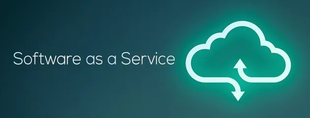

Articles

HISTORIQUE
Le terme SaaS (logiciel en tant que service) remplace les termes ASP (application service provider) ou encore « on demand », précédemment employés. Il est apparu le 28 février 2001, dans un article « Strategic Backgrounder: Software As A Service » publié par The Software & Information Industry's (SIIA) eBusiness Division, édition de Washington DC3.
La différence entre le logiciel en tant que service (SaaS) et les précédents modèles tels que ASP réside dans le fait que les applications s’appuyant sur ce modèle ont été nativement conçues pour l'accès via Internet. Précédemment, il s’agissait en général d’un frontal web appliqué à des applications traditionnelles.
Une étude menée par Markess International montre que des domaines comme les solutions collaboratives et la communication d'entreprise sont maintenant largement adoptés en mode logiciel en tant que service (SaaS). Les exemples de services collaboratifs les plus utilisés en mode SaaS (logiciel en tant que service) sont le partage d'agendas en ligne, les outils de conférence à distance, les services de gestion de contacts et de présence, la gestion documentaire et/ou de contenu ainsi que la messagerie d'entreprise. Ces solutions sont toujours en tête des usages des applications en SaaS en 2012 et des projets pour 2014.
En 2007, le marché des logiciels en tant que service (SaaS) était estimé à près de 5 milliards de dollars US dans le monde et 122 millions d'euros en France. Une étude de Gartner Group prédisait alors le doublement du marché d'ici 20114. En 2010, la progression s'avère plus modeste que prévu5 et les prévisions sont revues à la baisse. En 2013, le marché des solutions en mode SaaS est évalué6 à près de 2 milliards d'euros en intégrant les services annexes (conseil, formation, paramétrage des solutions, intégration à l'existant...) ainsi que les revenus réalisés en France par des fournisseurs basés hors du territoire.
DEFINITION
Le SaaS, ou Logiciel en tant que Service, est un modèle de distribution de logiciel à travers le Cloud. Les applications sont hébergées par le fournisseur de service. Découvrez les avantages et les inconvénients de ce modèle.
AVANTAGES ET INCONVENOIENTS
Avantages
L'utilisation de solutions logicielles en tant que service (SaaS) en entreprise permet un meilleur contrôle des charges techniques. L'ensemble des solutions techniques étant délocalisées le coût devient fixe, généralement fonction du nombre de personnes utilisant la solution SaaS. Le prix par utilisateur englobe le coût des licences des logiciels, de la maintenance et de l'infrastructure. Il revient à l'entreprise utilisatrice de faire son choix entre utilisation en SaaS, d'une part, et acquisition des licences puis déploiement en interne, d'autre part.
Le SaaS présente l'avantage d'un impact budgétaire et financier plutôt moindre. Les coûts totaux d'acquisition et de maintenance de la solution (TCO, total cost of ownership) s'avèrent moyens, contrairement à une acquisition traditionnelle de licence qui est généralement passée en immobilisation (CAPEX, hors maintenance).
Un avantage manifeste pour les entreprises est la rapidité de déploiement lorsque le logiciel SaaS correspond exactement au besoin (et qu'il ne nécessite aucune adaptation). Les solutions SaaS étant déjà pré-existantes, le temps de déploiement est extrêmement faible.
Un autre avantage pourrait être de réduire la consommation électrique en permettant la mutualisation des ressources sur des serveurs partagés par plusieurs entreprises (architecture multi-tenant) ainsi que l'usage d'un ordinateur à faible consommation muni d'un simple navigateur Web sans autres licences associées.
Inconvénients
Lors de la mise en place de solutions SaaS, les données relatives à l'entreprise cliente sont généralement stockées sur les serveurs du prestataire fournissant la solution. Lorsqu'il s'agit de données sensibles ou confidentielles, l'entreprise est obligée de prendre des dispositions contractuelles avec le fournisseur.
Le niveau de confidentialité des données ou des documents dépend de la législation du pays de l'hébergeur, contraignant les entreprises désireuses de confier leurs données à ne s'adresser qu'à des sociétés certifiées dans leur espace économique7.
La délocalisation des serveurs de la solution SaaS permet également un accès nomade aux données de l'entreprise. Cet accès entraîne un souci de sécurité de l'information lors du départ de collaborateurs. Il est indispensable d'avoir mis en place des procédures permettant, lors d'un départ, de supprimer l'habilitation de l'ancien collaborateur à accéder aux données de l'entreprise.
Par ailleurs, l'intégration des applications SaaS entre elles ainsi qu'avec les autres applications du système d'information, hébergées dans les centres de données de l'entreprise, figure parmi les principaux handicaps du SaaS 8. De nouveaux profils d'acteurs apparaissent pour répondre à cet enjeu à travers des plates-formes applicatives de type PaaS (Platform as a Service) fournissant des briques complémentaires ou des API permettant à ces applications de dialoguer entre elles.
Il est également important d'adapter son plan de continuité de l'activité à l'intégration de solutions SaaS, ainsi que de prévoir les divers scénarios possibles en cas de problèmes avec le prestataire de la solution SaaS.
En termes de contrôles internes, il est recommandé que le prestataire de service fournisse un certificat de type SSAE16 à son client afin de garantir la bonne qualité de son propre système de contrôles internes. Le cas échéant, le client doit prendre des mesures compensatoires comblant les manquements de son fournisseur de service.
Les migrations informatiques peuvent être compliquées puisqu'il faut basculer les données de la plate-forme d'un fournisseur vers celle d'un autre, avec divers problèmes associés (compatibilité, apparence pour le client, etc.). Dans le cadre du SaaS, le client se trouve lié à son fournisseur.
Le même service nécessite le fonctionnement de deux ordinateurs (client/prestataire) au lieu d'un seul. Cela peut augmenter la consommation électrique, notamment lorsque l'on utilise un poste client à forte consommation et un serveur non mutualisé. Il y a également un troisième acteur, c'est le fournisseur d'accès internet (FAI) car c'est lui qui assure la communication entre le client et le prestataire, donc une ligne hors service équivaut à l'arrêt total de l'activité de la société, d'où la nécessité de se procurer des lignes redondantes avec un débit minimal fixe assuré par l'opérateur de télécom.
Bien entendu ces solutions nécessitent de disposer d'un accès Internet, ce qui est loin d'être le cas pour les clients nomades se déplaçant dans des régions non couvertes ou avec une couverture médiocre.